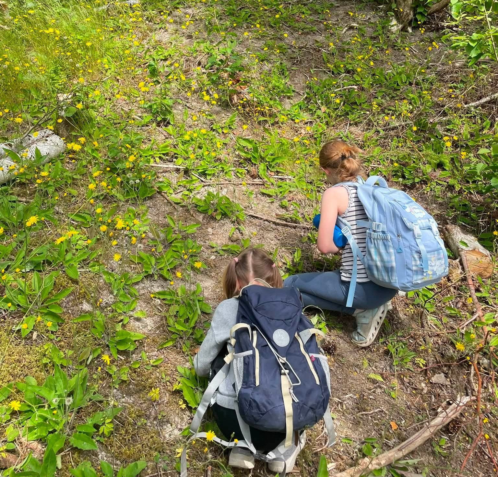
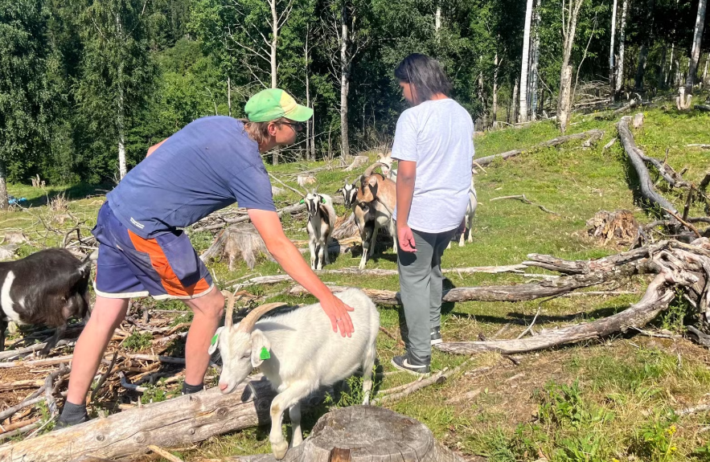

Velferd på gården – for barn, unge og voksne
Fladmark gård er godkjent tilbyder av Inn på tunet tjenester (Stiftelsen Norsk Mat).
Inn på tunet er et nasjonalt kvalitetsmerke for gårdsbaserte velferdstjenester.

1.–10. trinn
Et pedagogisk tilbud utenfor klasserommet, hvor elevene lærer gjennom praktiske gårdsaktiviteter og samspill med dyr og natur.
16–24 år
Målrettet arbeidstrening i trygge, naturlige omgivelser. Vi bygger mestring, rutiner og selvtillit gjennom meningsfylte oppgaver på gården.
8–12 år
Et fast tilbud etter skoletid, med ferietilbud i skoleferiene. Aktiviteter med dyr, natur og lek.

Telefon: 988 16 111
E-post: espen@fladmarkgard.no